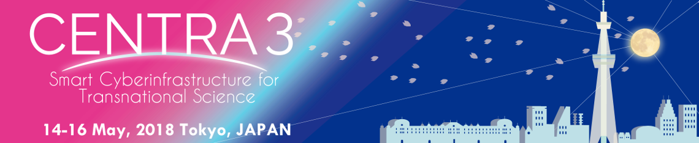
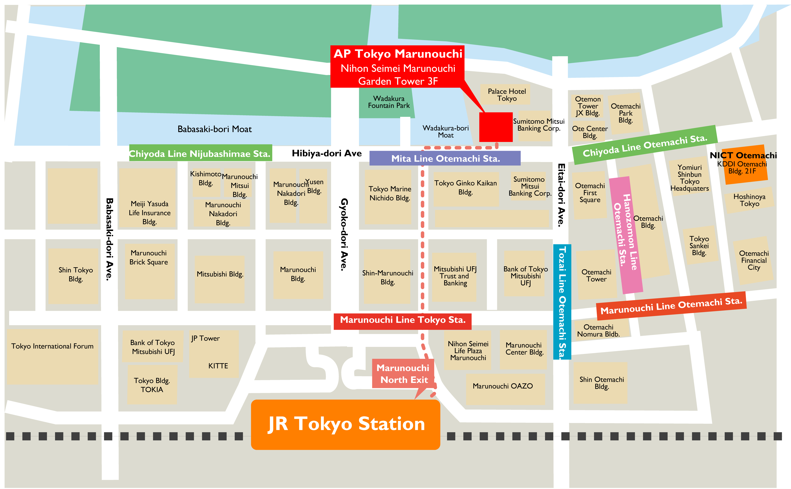

CENTRA 2018 Venue and Hotels
Venue
AP Tokyo Marunouchi
CENTRA 3 Meeting: Smart Cyberinfrastructure for Transnational Science will be held at AP Tokyo Marunouchi. The venue is located in the center of Tokyo (Marunouchi District) and adjacent to the Wadakura Fountain Park and Imperial Palace Gardens (Map).
Address: 3rd Floor, Mihon Seimei Garden Tower, 1-1-3 Marunouchi, Chiyoda-ku Tokyo 100-0005 Japan
Phone: +81 3 5224 5109
Access to Venue
By Tokyo Metro / Toei Subway
Otemachi Station (Mita Line (I09), Chiyoda Line (C11), Hanzomon Line (Z08), Tozai Line (T09) and Marunouchi Line (M18) provides the most convenient access to AP Tokyo Marunouchi. The venue has direct underground access from Otemachi Station (Exit D6).
By JR Trains
JR Tokyo Station is the nearest JR station to access to AP Tokyo Marunouchi. It is approximately 10-minute walk from JR Tokyo Station (Marunouchi North Exit).

For PRAGMA 34 Participants
Please note that PRAGMA 34 and CENTRA 3 All-Hands Meeting are held at different locations. PRAGMA 34 will be held at Akihabara Convention Hall near JR Akihabara Station; CENTRA 3 Meeting: Smart Cyberinfrastructure for Transnational Science will be held at AP Tokyo Marunouchi near JR Tokyo Station. It takes about 4 minutes from JR Akihabara Station to JR Tokyo Station on the JR Yamanote Line bound for Shinagawa:

List of Nearby Hotels
Please note that hotels listed below are for information purposes only. The CENTRA 3 secretariat is not responsible for reservations, confirmations, cancellations, etc.
Hotels within walking distance of the venue
＜Luxury Class＞ ★★★★★－★★★★
- Palace Hotel (Located next to the venue)
- The Tokyo Station Hotel (10-minute walk from the venue)
- Marunouchi Hotel (10-12 minutes’ walk from the venue)
＜Moderate to Budget Class＞ ★★★－★★
- Keio Presso Inn Otemachi (15-minute walk from the venue)
- Hotel Villa Fontaine Tokyo Otemachi(15-minute walk from the venue)
- Hotel Ryumeikan Tokyo (15-minute walk from the venue)
- Super Hotel Lohas Tokyo-eki Yaesu Chuo-guchi (15-20 minutes’ walk from the venue)
- Hotel Heimat (15-minute walk from the venue)
Hotels near Tokyo Metro Mitsukoshimae Station (One stop from Tokyo Metro Otemachi station by Hanzomon Line)
＜Moderate to Budget Class＞ ★★★－★★
- Smile Hotel Nihombashi Mitsukoshimae (5-minute walk from Mitsukoshimae station)
- Toyoko Inn Tokyo Nihombashi Mitsukoshi Mae A4 (8-minute walk from Mitsukoshimae station)